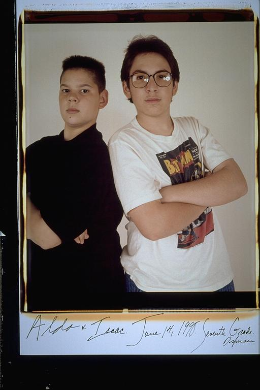

Aldo: When Isaac first saw these pictures of as kids, he said something funny. He said, "they don't make kids like us anymore.....thank god." And I understood what we meant, we were a scruffy looking bunch of kids. He might have been looking at this very picture, when he came up with this.
Isaac: There's a lot of talk these days about kids having sex at very young ages. I think a simple cure would be to make kids look like we did. Who'd want to have any sort of contact with kids like this? I have the precursor to a mullet, while Aldo seems to have a huge caterpillar on his head. Also, it should have been a crime to sell me those glasses. That Batman shirt's pretty cool, though. It's worth mentioning that the pudgy kid next to me grew up to be one of the coolest and handsomest people I've ever known. So there's hope for everyone.
